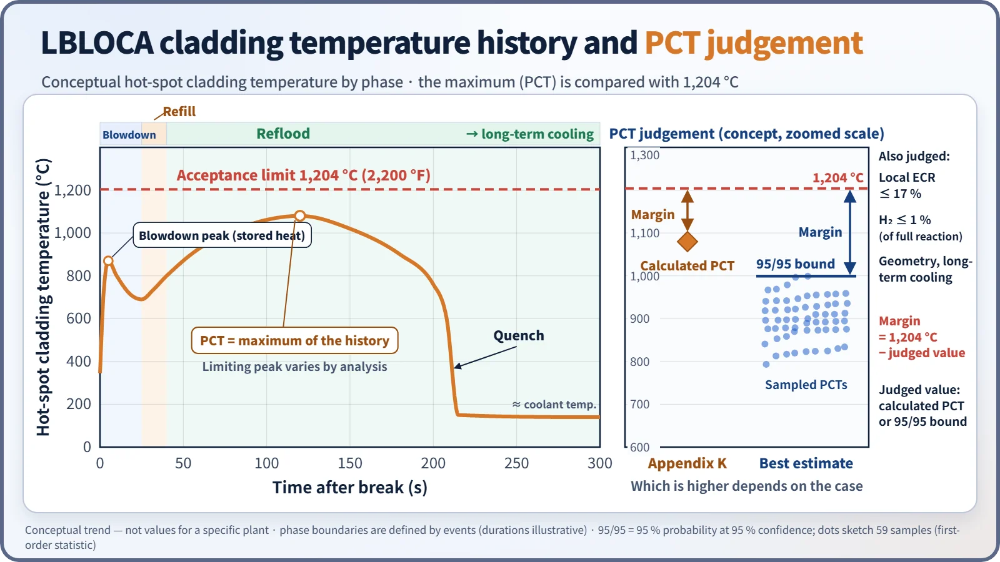
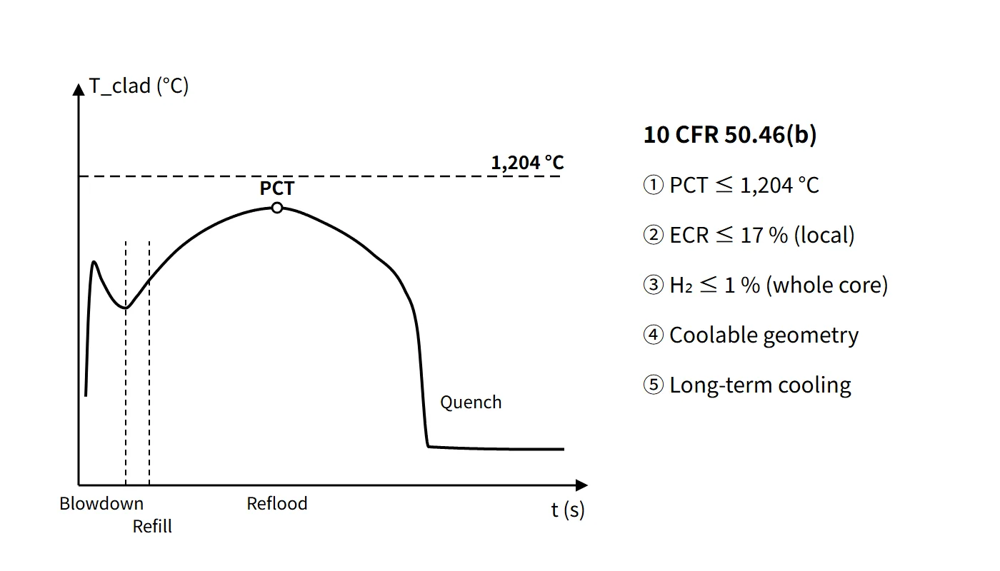

Accidents, Safety Analysis & Severe Accidents · C-SA-014
ECCS Acceptance Criteria (10 CFR 50.46) — PCT 1,204 °C, ECR 17 %, Hydrogen 1 %, Coolable Geometry and Long-Term Cooling
PCT at most 1,204 °C, local oxidation at most 17 % ECR, core-wide hydrogen at most 1 %, coolable geometry and long-term cooling — over the full range of postulated LOCAs.
The ECCS acceptance criteria require that, for a light-water reactor with UO₂ fuel in zirconium-alloy cladding, the emergency core cooling performance calculated with an approved evaluation model over the full range of postulated loss-of-coolant accidents (LOCAs) meets all five of: ① peak cladding temperature at or below 1,204 °C (2,200 °F); ② maximum local oxidation at or below 17 %; ③ core-wide hydrogen generation at or below 1 % of the hypothetical amount from reaction of all the cladding; ④ coolable core geometry; and ⑤ long-term cooling (10 CFR 50.46(b)).
This entry focuses on the content, basis and evaluation methods of the criteria.
Principle and mechanism
The five criteria and the damage each prevents
| Para. | Criterion | What it prevents |
|---|---|---|
| (b)(1) | Peak cladding temperature (PCT) ≤ 1,204 °C | Accelerated high-temperature oxidation, cladding embrittlement |
| (b)(2) | Total oxidation ≤ 0.17 times the cladding thickness before oxidation | Cladding fragmentation (loss of ductility) on reflood quench |
| (b)(3) | Hydrogen ≤ 0.01 times the hypothetical amount from reaction of all the cladding | Core-wide reaction and the hydrogen burden on the containment |
| (b)(4) | Coolable core geometry | Flow-channel blockage from ballooning, rupture, etc. |
| (b)(5) | Long-term cooling | Failure to keep removing decay heat |
The five criteria do not each prevent only one kind of damage. ① and ② together preserve cladding ductility, and so ultimately support ④, coolable geometry. 1,204 °C and 17 % were set at the 1973 US ECCS rulemaking hearing, on the basis of ring-compression tests of cladding quenched after high-temperature oxidation, as "the boundary at which ductility remains even after quench". 1,204 °C has nothing to do with the melting point of Zircaloy (about 1,850 °C); it is a design limit set conservatively in the region where the oxidation rate grows exponentially with temperature.
The "total oxidation" of (b)(2) is the metal thickness that would be consumed if all the oxygen absorbed by the cladding were converted locally to stoichiometric ZrO₂, i.e. the equivalent cladding reacted (ECR). It differs from the actual oxide thickness, and once the cladding is calculated to rupture, inner-surface oxidation is added from that moment. For ballooned, thinned regions the denominator is the thickness after ballooning and before significant oxidation, and corrosion formed during operation before the accident is included in the evaluation. The point of highest temperature and the point of maximum oxidation are not necessarily the same.
A frequent confusion is that 17 % applies to the most oxidized local point, while 1 % applies to the cladding of the whole core (excluding the plenum region). Later research showed that the more hydrogen the cladding has absorbed, the lower its ductility at the same ECR; this is the starting point of the 50.46c discussion below.
![Cutaway of a reactor vessel lower section during reflood with labels for the hot spot and maximum oxidation point (criteria 1 and 2, local), all core cladding (criterion 3, total), the ballooning and rupture region (criterion 4, geometry) and the water supply for decay heat removal (criterion 5), beside a card listing 10 CFR 50.46(b)(1) to (b)(5): PCT at most 1,204 °C (2,200 °F), local oxidation at most 17 % ECR, hydrogen generation at most 1 % core-wide, coolable geometry and long-term cooling, with the damage each addresses](../../assets/images/concepts/c-sa-014-eccs-acceptance-criteria/fig1-eccs-criteria-map.webp)
LBLOCA phases and PCT behaviour
In a large-break LOCA (double-ended guillotine break of a large coolant pipe), the cladding temperature moves through three phases. The phase boundaries are defined by events, not fixed times, and in a large PWR the whole sequence spans roughly a few hundred seconds.
- Blowdown: the coolant is rapidly discharged, core flow stagnates or reverses, and early CHF occurs. Heat stored in the fuel redistributes into the cladding, producing the blowdown peak within a few seconds. Blowdown ends when the system approaches pressure equilibrium with the containment.
- Refill: the safety injection tank (SIT) water fills the lower plenum (SIT injection already starts during blowdown). Core cooling is weak and the cladding heats up again from decay heat.
- Reflood: starts when the lower plenum is full and water reaches the bottom of the core. The water level and quench front rise from below; when steam binding lowers the reflood rate, a reflood peak occurs.
Which peak is limiting depends on the reactor type and the analysis. APR1400 best-estimate studies have reported cases where, depending on how much blowdown quenching occurs, the limiting peak fell either in blowdown (about 10 s) or in reflood (tens to over a hundred seconds). After that, long-term cooling ((b)(5)) is demonstrated by continued decay-heat removal through sump or IRWST recirculation, including switching to hot-leg injection to prevent boron precipitation. In a small LOCA the core is uncovered slowly by boil-off, and the PCT occurs hundreds to thousands of seconds later.

Evaluation methods: Appendix K and best estimate
| Appendix K conservative evaluation | Best estimate (BE) + uncertainty | |
|---|---|---|
| Basis | 50.46(a)(1)(ii), Appendix K Section I | 50.46(a)(1)(i), RG 1.157 and RG 1.203 |
| Power | Licensed power × 1.02 | Nominal + uncertainty distribution |
| Decay heat | ANS-1971 infinite operation × 1.2 | Latest ANS-5.1 + uncertainty |
| Metal–water reaction | Baker-Just | Best-estimate correlations such as Cathcart-Pawel |
| Other key requirements | Moody critical flow for two-phase discharge (discharge coefficients 0.6–1.0 examined), no return to nucleate boiling after CHF during blowdown, ECC bypass for cold-leg breaks, steam cooling only if reflood rate is below 1 in/s, worst single failure | Code uncertainty quantification (CSAU), comparison with experimental data |
| Value judged | Calculated PCT | 95/95 upper bound of PCT |
In 1974 only Appendix K was allowed; the 1988 revision allowed best-estimate evaluation that quantifies uncertainty and shows "a high probability that the criteria will not be exceeded". In practice the judgement uses the PCT value at 95 % probability and 95 % confidence; for a one-sided upper bound of a single output (PCT), Wilks order statistics require 59 runs at first order or 124 runs at third order. The 95/95 value is a statistical bound on the PCT distribution, not a time history.
For example, the US-certified APR1400 (DC) evaluated LBLOCA with the CAREM best-estimate methodology (RELAP5/MOD3.3K). Small LOCAs are often evaluated with conservative models, but best-estimate evaluation is also allowed.
What it means in a plant
- Design: SIT volume and pressure, safety injection pump flow and the injection location (cold-leg injection in the OPR1000, direct vessel injection DVI in the APR1400) are set so that the five criteria are met. The OPR1000 ECCS consists of 4 SITs, 2 high-pressure and 2 low-pressure safety injection pumps, the refuelling water tank (RWT) and containment sump recirculation.
- Operation: core power distribution limits (FQ, axial shape) and the technical specification LCOs for the SITs and ECCS protect the LOCA analysis assumptions. PCT margin = 1,204 °C − calculated PCT is tracked and re-evaluated for power uprates and fuel changes.
- Safety: the criteria are for design-basis LOCAs, not severe-accident criteria after core damage. The broader ECCS design criteria add to the five acceptance criteria the single-failure and power assumptions of GDC 35 (function with onsite power only or offsite power only) and redundancy, independence and periodic testability.
Regulatory and design criteria
The acceptance criteria are those of the US rule 10 CFR 50.46; the related US requirements are listed below.
| Basis | Key point |
|---|---|
| 10 CFR 50.46(b)(1)–(5) | The five acceptance criteria; applies to LWRs with UO₂ fuel in zircaloy or ZIRLO cladding |
| 10 CFR 50.46(a)(3) | Changes or errors over 50 °F (about 28 °C) in PCT (including cumulative) reported within 30 days, others annually |
| 10 CFR 50 Appendix K | Required and acceptable features of conservative evaluation models |
| 10 CFR 50 Appendix A, GDC 35, 36, 37 | ECCS function (single failure + function with onsite or offsite power only), inspection and testing |
| RG 1.157 (1989), RG 1.203 (2005) | Best-estimate calculations and evaluation model development (EMDAP) |
How the rule has evolved
- In the US, a final rule draft for 50.46c (2016, SECY-16-0033), which would lower the oxidation limit according to hydrogen uptake, was prepared but returned to the staff by SRM on 11 April 2024 and not issued, so the current 50.46(b) remains in force. A proposed rule of 16 July 2026 (FR 2026-14341) would place the performance-based approach and embrittlement research of 50.46c in a new voluntary alternative 10 CFR 50.46a (the existing 50.46a redesignated 50.46b) and also address FFRD; as of October 2026 it is still at the proposed stage.
Easily confused pairs
| 17 % ECR (b)(2) | Hydrogen 1 % (b)(3) | |
|---|---|---|
| Applies to | The most oxidized local point | Cladding of the whole core |
| Definition | Equivalent oxidized thickness ÷ thickness before oxidation | Hydrogen generated ÷ hypothetical amount from full reaction |
| Purpose | Keep cladding ductility on quench | Limit core-wide reaction |
| ECCS acceptance criteria | Severe-accident hydrogen criterion | |
|---|---|---|
| Rule | 50.46(b) | 50.44(c) |
| Situation | Design-basis LOCA | 100 % cladding reaction assumed |
| Value | Hydrogen ≤ 1 % | Uniformly distributed containment average below 10 vol% |
Key points at a glance
- Definition: criteria the ECCS performance must meet over the full range of postulated LOCAs; 10 CFR 50.46(b).
- PCT: calculated peak cladding temperature ≤ 1,204 °C (2,200 °F) — limits high-temperature oxidation and embrittlement.
- Maximum oxidation: local total oxidation ≤ 0.17 × cladding thickness before oxidation (17 % ECR) — keeps ductility on quench.
- Hydrogen generation: whole core ≤ 0.01 × hypothetical amount from full cladding reaction.
- Coolable geometry: cooling channels maintained after ballooning and rupture.
- Long-term cooling: long-term removal of decay heat from long-lived radioactivity by recirculation.
- Evaluation: Appendix K conservative (1.02 power, 1.2 × ANS-1971, Baker-Just) or BE + uncertainty (95/95, CSAU).
- LBLOCA PCT: blowdown peak → reheating during refill → reflood peak → quench (limiting peak depends on the analysis).
- Reporting (US): report within 30 days if PCT changes by more than 50 °F (about 28 °C), otherwise annually.
- Trend: 50.46c returned in 2024; current 50.46(b) remains.
